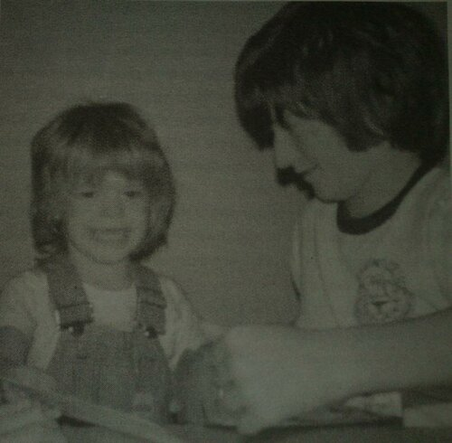
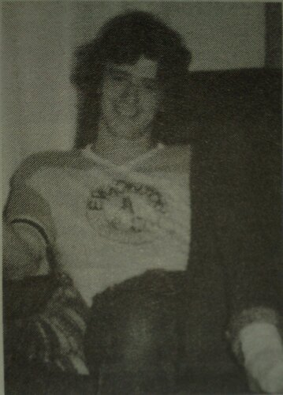

Глава 5
Перевод Тани (Dark Bird) для VSplanet.net

Я и Гэри.
Это случилось 19 мая 1982 года, моя семья была потрясена катастрофой. Дядя Гэри, которому было всего семнадцать, получил серьёзные повреждения в автомобильной аварии. Он был на девять лет старше меня, и он был как брат, которого у меня никогда не было. Мои дяди Рэнди и Джо также заменили мне отца. Это потрясло меня до глубины. Я не мог в полной мере осознать, что происходит.
Я помню, как посреди ночи пришёл к бабушке и дедушке. Авария произошла в Оуэн Саунд, провинция Онтарио, около часа ночи. Гэри и четверо его друзей возвращались домой после игры в лакросс. Было уже поздно, дороги были мокрые, а ребята были молоды и горячи. Во время аварии Гэри выбросило из автомобиля, и он впал в кому. С той ночи я шесть дней проплакал в Общественной Больнице Торонто. Наконец, 26 мая было принято решение снять Гэри с жизнеобеспечения.

Мой дядя Гэри в 15. Мне всё ещё не хватает его.
Я был молод, но даже тогда я мог понять, что это просто не правильно. Он был мне как брат, один из моих лучших друзей, мой футбольный тренер, когда приходило лето, он был на верном пути к команде Edmonton Oilers и, возможно, карьере в НХЛ. Я спрашивал себя, почему? У меня до сих пор нет ответа, но я должен верить, что хорошие люди попадают в какое-то лучшее место. На похоронах моя бабушка вспомнила, что когда я читаю молитву Господу, мой голос звучит громче, чем у кого-либо. Эта молитва казалась такой важной для меня. Моя мама вспоминает, как я сжимал ее руку. Она думала, что я пытался поддержать ее. Я знаю, что она поддерживала меня, поэтому я считаю, что мы поддерживали друг друга. Это удар, от которого, я думаю, моя семья никогда не оправится.
Теперь в нашей жизни была зияющая дыра. Ничто не сможет заменить Гэри, но что-то появилось на экране моего радара, чтобы помочь заполнить пустоту. Долгое время я не мог найти себе занятия, пока в один прекрасный день на экране мого телевизора не появился одетый в желто-красное огромный блондин с горящими глазами. Он призвал меня пить молоко, не забывать молиться и принимать витамины.
Этот громила был Халк Хоган.